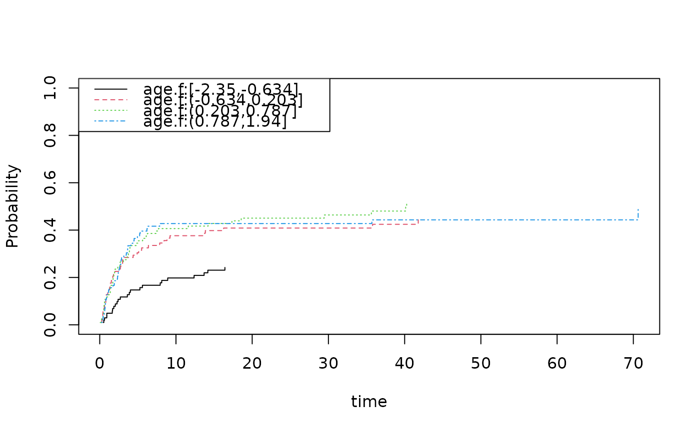

Performs score-test type tests for proportionality of marginal means in competing risks data and recurrent events, as presented in Ghosh and Lin (2000). The test is based on an IPCW (Inverse Probability of Censoring Weighting) formulation.
Usage
test_marginalMean(
formula,
data,
cause = 1,
cens.code = 0,
...,
death.code = 2,
death.code.prop = NULL,
time = NULL,
beta = NULL
)Arguments
- formula
Formula with an
Eventobject on the left-hand side and covariates (typically withstrata()for group comparison) on the right. Can includecluster(id)for correlated data.- data
Data frame containing all variables referenced in the formula.
- cause
Cause of interest (default 1).
- cens.code
Censoring code (default 0).
- ...
Additional arguments passed to lower-level functions.
- death.code
Code for death (terminating event, default 2).
- death.code.prop
Code for other causes of death for Fine-Gray regression model.
- time
Upper limit for Pepe-Mori and AUC integrals. If NULL, defaults to the maximum event time for the cause of interest.
- beta
Starting values for the score test (default NULL, uses zeros).
Value
An object of class "marginalTest" containing:
- pepe.mori
Pepe-Mori test results with compare p-value.
- RatioAUC
Ratio of AUC test results with compare p-value.
- difAUC
Difference of AUC test results with compare p-value.
- prop.test
Proportionality test results.
- score.test
Score test results (equivalent to Gray's test).
- score.iid
Influence function for the score test.
- time
Upper time limit used.
- RAUCl, RAUCe
Raw and transformed AUC estimates.
Details
The function computes several tests:
Pepe-Mori Test: Tests for equality of marginal mean functions between groups.
Ratio of AUC: Compares the area under the curve of marginal means.
Difference of AUC: Tests for difference in areas under the curve.
Score Test: Tests for proportionality (equivalent to Gray's test for CIF).
Proportionality Test: Tests the proportional hazards assumption.
The Pepe-Mori test uses weights based on the number at risk in each group to construct a weighted integral of the difference in marginal means.
References
Ghosh, D. and Lin, D. Y. (2000). Nonparametric Analysis of Recurrent Events and Death. Biometrics, 56, 554–562.
Examples
data(bmt,package="mets")
bmt$time <- bmt$time+runif(nrow(bmt))*0.01
bmt$id <- 1:nrow(bmt)
dcut(bmt) <- age.f~age
fg=cifregFG(Event(time,cause)~tcell,data=bmt,cause=1)
## computing tests for difference for CIF
pmt <- test_marginalMean(Event(time,cause)~strata(tcell)+cluster(id),data=bmt,cause=1,
death.code=1:2,death.code.prop=2,cens.code=0,time=40)
#> Warning: IC does not have mean zero (max |mean|/rms = 0.11). Using lava.options(check.ic = FALSE) disables the warning globally.
summary(pmt)
#> coeffients:
#> p-value
#> time 40.0000
#> Pepe-Mori 0.0203
#> Ratio-AUC 0.0494
#> Proportionality 0.0500
#> Proportionality-score-test 0.0292
#>
pmt$pepe.mori
#> Estimate Std.Err 2.5% 97.5% P-value
#> factor(strata__)tcell=1 -6.409 2.762 -11.82 -0.996 0.02031
#> ────────────────────────────────────────────────────────────
#> Null Hypothesis:
#> [factor(strata__)tcell=1] = 0
#>
#> chisq = 5.385, df = 1, p-value = 0.02031
pmt$RatioAUC
#> Estimate Std.Err 2.5% 97.5% P-value
#> (Intercept) -0.484 0.2463 -0.9667 -0.001352 0.04936
#> ────────────────────────────────────────────────────────────
#> Null Hypothesis:
#> [(Intercept)] = 0
#>
#> chisq = 3.863, df = 1, p-value = 0.04936
pmt$prop.test
#> Estimate Std.Err 2.5% 97.5% P-value
#> factor(strata__)tcell=1 -0.5157 0.2631 -1.031 -5.483e-05 0.04998
#> ────────────────────────────────────────────────────────────
#> Null Hypothesis:
#> [factor(strata__)tcell=1] = 0
#>
#> chisq = 3.8423, df = 1, p-value = 0.04998
## score test equialent to Gray's test but variance estimated differently
pmt$score.test
#> Estimate Std.Err 2.5% 97.5% P-value
#> p1 -8.633 3.957 -16.39 -0.8764 0.02915
#> ────────────────────────────────────────────────────────────
#> Null Hypothesis:
#> [p1] = 0
#>
#> chisq = 4.7586, df = 1, p-value = 0.02915
### age-groups
pmt <- test_marginalMean(Event(time,cause)~strata(age.f)+cluster(id),data=bmt,cause=1,
death.code=1:2,death.code.prop=2,cens.code=0)
#> Warning: IC does not have mean zero (max |mean|/rms = 0.097). Using lava.options(check.ic = FALSE) disables the warning globally.
summary(pmt)
#> coeffients:
#> p-value
#> time 70.6322
#> Pepe-Mori NA
#> Ratio-AUC 0.0060
#> Proportionality 0.0018
#> Proportionality-score-test 0.0002
#>
## having a look at the cumulative incidences
cifs <- cif(Event(time,cause)~strata(age.f)+cluster(id),data=bmt,cause=1)
plot(cifs)

## recurrent events
data(hfactioncpx12)
hf <- hfactioncpx12
pmt <- test_marginalMean(Event(entry,time,status)~strata(treatment)+cluster(id),data=hf,
cause=1,death.code=2,cens.code=0)
#> Warning: IC does not have mean zero (max |mean|/rms = 0.051). Using lava.options(check.ic = FALSE) disables the warning globally.
summary(pmt)
#> coeffients:
#> p-value
#> time 3.9794
#> Pepe-Mori 0.2918
#> Ratio-AUC 0.2278
#> Proportionality 0.1641
#> Proportionality-score-test 0.1611
#>